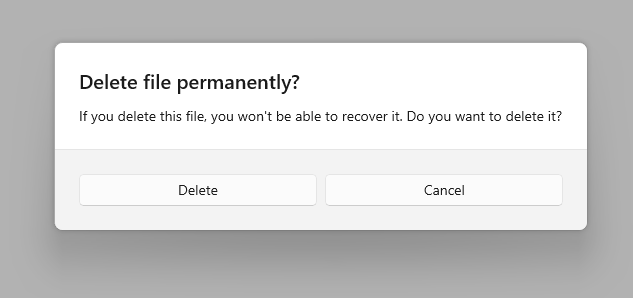
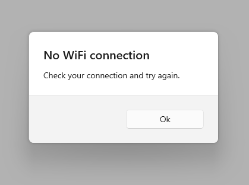
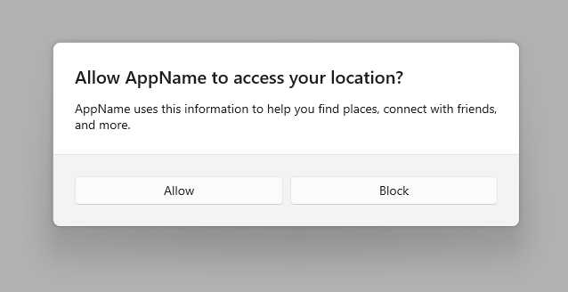
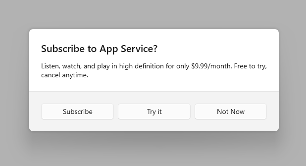
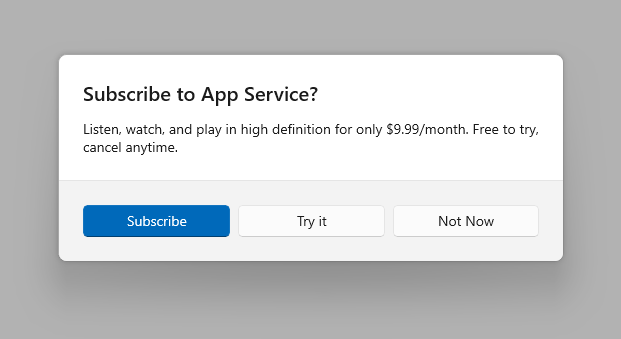

Dialog controls
Dialog controls are modal UI overlays that provide contextual app information. They block interactions with the app window until being explicitly dismissed. They often request some kind of action from the user.

Is this the right control?
Use dialogs to notify users of important information or to request confirmation or additional info before an action can be completed.
For recommendations on when to use a dialog vs. when to use a flyout (a similar control), see Dialogs and flyouts.
General guidelines
- Clearly identify the issue or the user's objective in the first line of the dialog's text.
- The dialog title is the main instruction and is optional.
- Use a short title to explain what people need to do with the dialog.
- If you're using the dialog to deliver a simple message, error or question, you can optionally omit the title. Rely on the content text to deliver that core information.
- Make sure that the title relates directly to the button choices.
- The dialog content contains the descriptive text and is required.
- Present the message, error, or blocking question as simply as possible.
- If a dialog title is used, use the content area to provide more detail or define terminology. Don't repeat the title with slightly different wording.
- At least one dialog button must appear.
- Ensure that your dialog has at least one button corresponding to a safe, nondestructive action like "Got it!", "Close", or "Cancel". Use the CloseButton API to add this button.
- Use specific responses to the main instruction or content as button text. An example is, "Do you want to allow AppName to access your location?", followed by "Allow" and "Block" buttons. Specific responses can be understood more quickly, resulting in efficient decision making.
- Ensure that the text of the action buttons is concise. Short strings enable the user to make a choice quickly and confidently.
- In addition to the safe, nondestructive action, you may optionally present the user with one or two action buttons related to the main instruction. These "do it" action buttons confirm the main point of the dialog. Use the PrimaryButton and SecondaryButton APIs to add these "do it" actions.
- The "do it" action button(s) should appear as the leftmost buttons. The safe, nondestructive action should appear as the rightmost button.
- You may optionally choose to differentiate one of the three buttons as the dialog's default button. Use the DefaultButton API to differentiate one of the buttons.
- Don't use dialogs for errors that are contextual to a specific place on the page, such as validation errors (in password fields, for example), use the app's canvas itself to show inline errors.
- Use the ContentDialog class to build your dialog experience. Don't use the deprecated MessageDialog API.
Create a dialog
- Important APIs: ContentDialog class
The WinUI 3 Gallery app includes interactive examples of most WinUI 3 controls, features, and functionality. Get the app from the Microsoft Store or get the source code on GitHub
To create a dialog, you use the ContentDialog class. You can create a dialog in code or markup. Although its usually easier to define UI elements in XAML, in the case of a simple dialog, it can be easier to just use code. This example creates a dialog to notify the user that there's no WiFi connection, and then uses the ShowAsync method to display it.
private async void DisplayNoWifiDialog()
{
ContentDialog noWifiDialog = new ContentDialog
{
Title = "No wifi connection",
Content = "Check your connection and try again.",
CloseButtonText = "OK"
};
ContentDialogResult result = await noWifiDialog.ShowAsync();
}
If your content dialog is more complex, it can be easier to create it with XAML. You can either create it in the XAML file for your page, or you can create a subclass of ContentDialog with it's own .xaml and code-behind file. For complete examples of both, see the [ContentDialog] class reference.
There is no item template in Visual Studio to create a new content dialog file, but you can use the Blank Page template and modify the resulting files to create a dialog.
To create a new content dialog with XAML and code-behind
- In the Solution Explorer pane, right-click on the project name and select Add > New Item...
- In the Add New Item dialog, select WinUI in the template list on the left-side of the window.
- Select the Blank Page template.
- Name the file. (In this example, the file is named
XamlContentDialog). - Press Add.
In the new .xaml file, change the opening and closing Page tags to Content Dialog.
<!--
<Page
x:Class="ContentDialog_WinUI3.XamlContentDialog"
...>
</Page>
-->
<ContentDialog
x:Class="ContentDialog_WinUI3.XamlContentDialog"
...>
</ContentDialog>
In the .xaml.cs file, make your class inherit from ContentDialog instead of Page.
// public sealed partial class XamlContentDialog : Page
public sealed partial class XamlContentDialog : ContentDialog
Show the dialog
To show a dialog, call the ShowAsync method.
XamlContentDialog xamlDialog = new XamlContentDialog()
{
XamlRoot = this.XamlRoot
};
await xamlDialog.ShowAsync();
Warning
There can only be one ContentDialog open per window at a time. Attempting to open two content dialogs will throw an exception.
Set the XamlRoot
When you show a ContentDialog, you need to manually set the XamlRoot of the dialog to the root of the XAML host. To do so, set the ContentDialog's XamlRoot property to the same XamlRoot as an element already in the XAML tree.
If the ContentDialog is shown from a Page, you can set the ContentDialog's XamlRoot property to the XamlRoot of the Page as shown in the previous example.
Window doesn't have a XamlRoot property, so if the dialog is shown from a Window, set the dialog's XamlRoot property to that of the Window's root content element, as shown here.
<Window
... >
<Grid x:Name="rootPanel">
</Grid>
</Window>
private async void DisplayNoWifiDialog()
{
ContentDialog noWifiDialog = new ContentDialog
{
XamlRoot = rootPanel.XamlRoot,
Title = "No wifi connection",
Content = "Check your connection and try again.",
CloseButtonText = "Ok"
};
ContentDialogResult result = await noWifiDialog.ShowAsync();
}
Respond to dialog buttons
When the user clicks a dialog button, the ShowAsync method returns a ContentDialogResult to let you know which button the user clicks.
The dialog in this example asks a question and uses the returned ContentDialogResult to determine the user's response.
private async void DisplayDeleteFileDialog()
{
ContentDialog deleteFileDialog = new ContentDialog
{
Title = "Delete file permanently?",
Content = "If you delete this file, you won't be able to recover it. Do you want to delete it?",
PrimaryButtonText = "Delete",
CloseButtonText = "Cancel"
};
ContentDialogResult result = await deleteFileDialog.ShowAsync();
// Delete the file if the user clicked the primary button.
/// Otherwise, do nothing.
if (result == ContentDialogResult.Primary)
{
// Delete the file.
}
else
{
// The user clicked the CloseButton, pressed ESC, Gamepad B, or the system back button.
// Do nothing.
}
}
Provide a safe action
Because dialogs block user interaction, and because buttons are the primary mechanism for users to dismiss the dialog, ensure that your dialog contains at least one "safe" and nondestructive button such as "Close" or "Got it!". All dialogs should contain at least one safe action button to close the dialog. This ensures that the user can confidently close the dialog without performing an action.

private async void DisplayNoWifiDialog()
{
ContentDialog noWifiDialog = new ContentDialog
{
Title = "No wifi connection",
Content = "Check your connection and try again.",
CloseButtonText = "OK"
};
ContentDialogResult result = await noWifiDialog.ShowAsync();
}
When dialogs are used to display a blocking question, your dialog should present the user with action buttons related to the question. The "safe" and nondestructive button may be accompanied by one or two "do it" action buttons. When presenting the user with multiple options, ensure that the buttons clearly explain the "do it" and safe/"don't do it" actions related to the question proposed.

private async void DisplayLocationPromptDialog()
{
ContentDialog locationPromptDialog = new ContentDialog
{
Title = "Allow AppName to access your location?",
Content = "AppName uses this information to help you find places, connect with friends, and more.",
CloseButtonText = "Block",
PrimaryButtonText = "Allow"
};
ContentDialogResult result = await locationPromptDialog.ShowAsync();
}
Three button dialogs are used when you present the user with two "do it" actions and a "don't do it" action. Three button dialogs should be used sparingly with clear distinctions between the secondary action and the safe/close action.

private async void DisplaySubscribeDialog()
{
ContentDialog subscribeDialog = new ContentDialog
{
Title = "Subscribe to App Service?",
Content = "Listen, watch, and play in high definition for only $9.99/month. Free to try, cancel anytime.",
CloseButtonText = "Not Now",
PrimaryButtonText = "Subscribe",
SecondaryButtonText = "Try it"
};
ContentDialogResult result = await subscribeDialog.ShowAsync();
}
The three dialog buttons
ContentDialog has three different types of buttons that you can use to build a dialog experience.
- CloseButton - Required - Represents the safe, nondestructive action that enables the user to exit the dialog. Appears as the rightmost button.
- PrimaryButton - Optional - Represents the first "do it" action. Appears as the leftmost button.
- SecondaryButton - Optional - Represents the second "do it" action. Appears as the middle button.
Using the built-in buttons will position the buttons appropriately, ensure that they correctly respond to keyboard events, ensure that the command area remains visible even when the on-screen keyboard is up, and will make the dialog look consistent with other dialogs.
CloseButton
Every dialog should contain a safe, nondestructive action button that enables the user to confidently exit the dialog.
Use the ContentDialog.CloseButton API to create this button. This allows you to create the right user experience for all inputs including mouse, keyboard, touch, and gamepad. This experience will happen when:
- The user clicks or taps on the CloseButton.
- The user presses the system back button.
- The user presses the ESC button on the keyboard.
- The user presses Gamepad B.
When the user clicks a dialog button, the ShowAsync method returns a ContentDialogResult to let you know which button the user clicks. Pressing on the CloseButton returns ContentDialogResult.None.
PrimaryButton and SecondaryButton
In addition to the CloseButton, you may optionally present the user with one or two action buttons related to the main instruction. Leverage PrimaryButton for the first "do it" action, and SecondaryButton for the second "do it" action. In three-button dialogs, the PrimaryButton generally represents the affirmative "do it" action, while the SecondaryButton generally represents a neutral or secondary "do it" action. For example, an app may prompt the user to subscribe to a service. The PrimaryButton as the affirmative "do it" action would host the Subscribe text, while the SecondaryButton as the neutral "do it" action would host the Try it text. The CloseButton would allow the user to cancel without performing either action.
When the user clicks on the PrimaryButton, the ShowAsync method returns ContentDialogResult.Primary. When the user clicks on the SecondaryButton, the ShowAsync method returns ContentDialogResult.Secondary.
DefaultButton
You may optionally choose to differentiate one of the three buttons as the default button. Specifying the default button causes the following to happen:
- The button receives the Accent Button visual treatment
- The button will respond to the ENTER key automatically
- When the user presses the ENTER key on the keyboard, the click handler associated with the Default Button will fire and the ContentDialogResult will return the value associated with the Default Button
- If the user has placed Keyboard Focus on a control that handles ENTER, the Default Button will not respond to ENTER presses
- The button will receive focus automatically when the Dialog is opened unless the dialog's content contains focusable UI
Use the ContentDialog.DefaultButton property to indicate the default button. By default, no default button is set.

private async void DisplaySubscribeDialog()
{
ContentDialog subscribeDialog = new ContentDialog
{
Title = "Subscribe to App Service?",
Content = "Listen, watch, and play in high definition for only $9.99/month. Free to try, cancel anytime.",
CloseButtonText = "Not Now",
PrimaryButtonText = "Subscribe",
SecondaryButtonText = "Try it",
DefaultButton = ContentDialogButton.Primary
};
ContentDialogResult result = await subscribeDialog.ShowAsync();
}
Confirmation dialogs (OK/Cancel)
A confirmation dialog gives users the chance to confirm that they want to perform an action. They can affirm the action, or choose to cancel. A typical confirmation dialog has two buttons: an affirmation ("OK") button and a cancel button.
-
In general, the affirmation button should be on the left (the primary button) and the cancel button (the secondary button) should be on the right.
- As noted in the general recommendations section, use buttons with text that identifies specific responses to the main instruction or content.
UWP and WinUI 2
Important
The information and examples in this article are optimized for apps that use the Windows App SDK and WinUI 3, but are generally applicable to UWP apps that use WinUI 2. See the UWP API reference for platform specific information and examples.
This section contains information you need to use the control in a UWP or WinUI 2 app.
APIs for this control exist in the Windows.UI.Xaml.Controls namespace.
- UWP APIs: ContentDialog class
- Open the WinUI 2 Gallery app and see the ContentDialog in action. The WinUI 2 Gallery app includes interactive examples of most WinUI 2 controls, features, and functionality. Get the app from the Microsoft Store or get the source code on GitHub.
We recommend using the latest WinUI 2 to get the most current styles and templates for all controls. WinUI 2.2 or later includes a new template for this control that uses rounded corners. For more info, see Corner radius.
ContentDialog in AppWindow or Xaml Islands
NOTE: This section applies only to apps that target Windows 10, version 1903 or later. AppWindow and XAML Islands are not available in earlier versions. For more info about versioning, see Version adaptive apps.
By default, content dialogs display modally relative to the root ApplicationView. When you use ContentDialog inside of either an AppWindow or a XAML Island, you need to manually set the XamlRoot on the dialog to the root of the XAML host.
To do so, set the ContentDialog's XamlRoot property to the same XamlRoot as an element already in the AppWindow or XAML Island, as shown here.
private async void DisplayNoWifiDialog()
{
ContentDialog noWifiDialog = new ContentDialog
{
Title = "No wifi connection",
Content = "Check your connection and try again.",
CloseButtonText = "OK"
};
// Use this code to associate the dialog to the appropriate AppWindow by setting
// the dialog's XamlRoot to the same XamlRoot as an element that is already present in the AppWindow.
if (ApiInformation.IsApiContractPresent("Windows.Foundation.UniversalApiContract", 8))
{
noWifiDialog.XamlRoot = elementAlreadyInMyAppWindow.XamlRoot;
}
ContentDialogResult result = await noWifiDialog.ShowAsync();
}
Warning
There can only be one ContentDialog open per thread at a time. Attempting to open two ContentDialogs will throw an exception, even if they are attempting to open in separate instances of AppWindow.